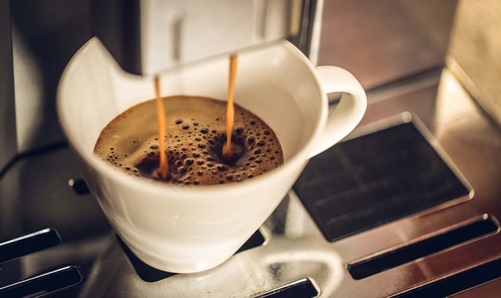
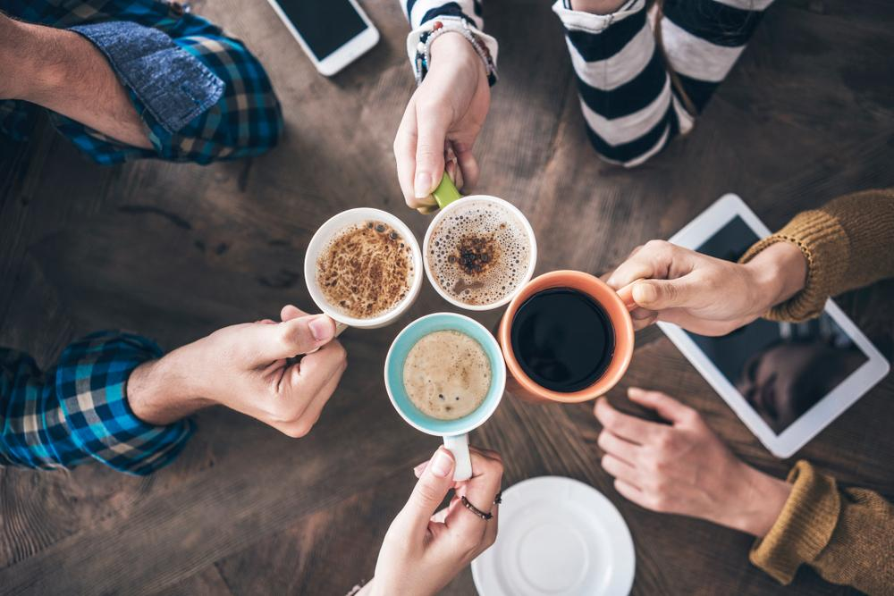
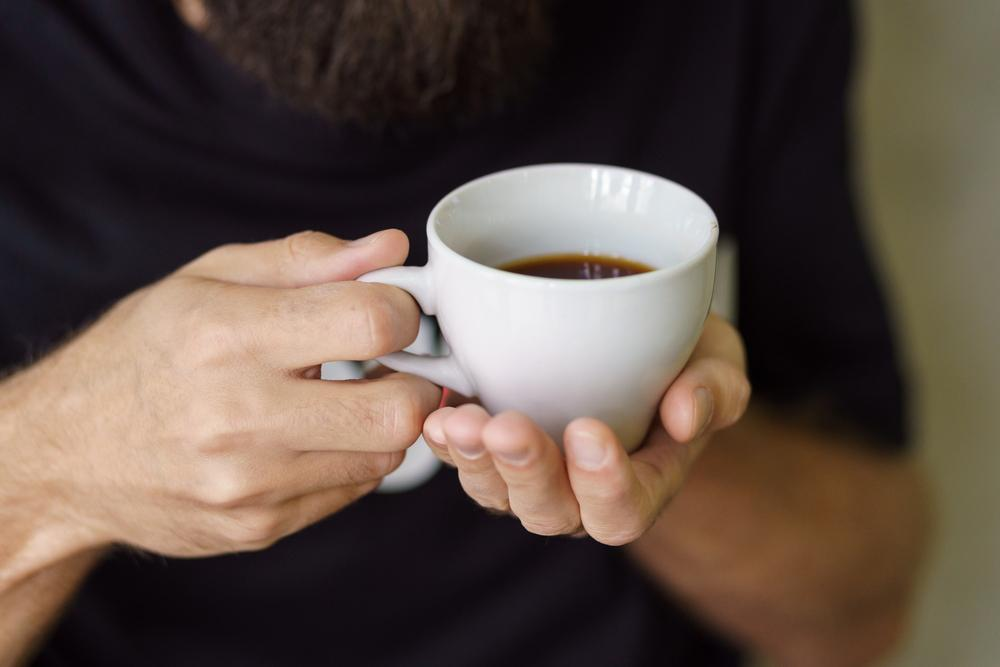
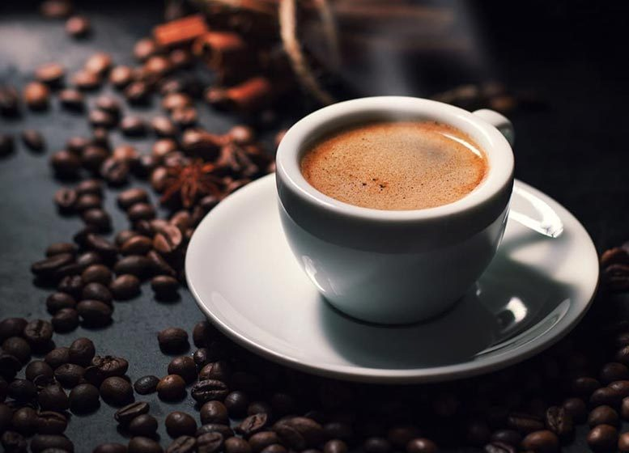
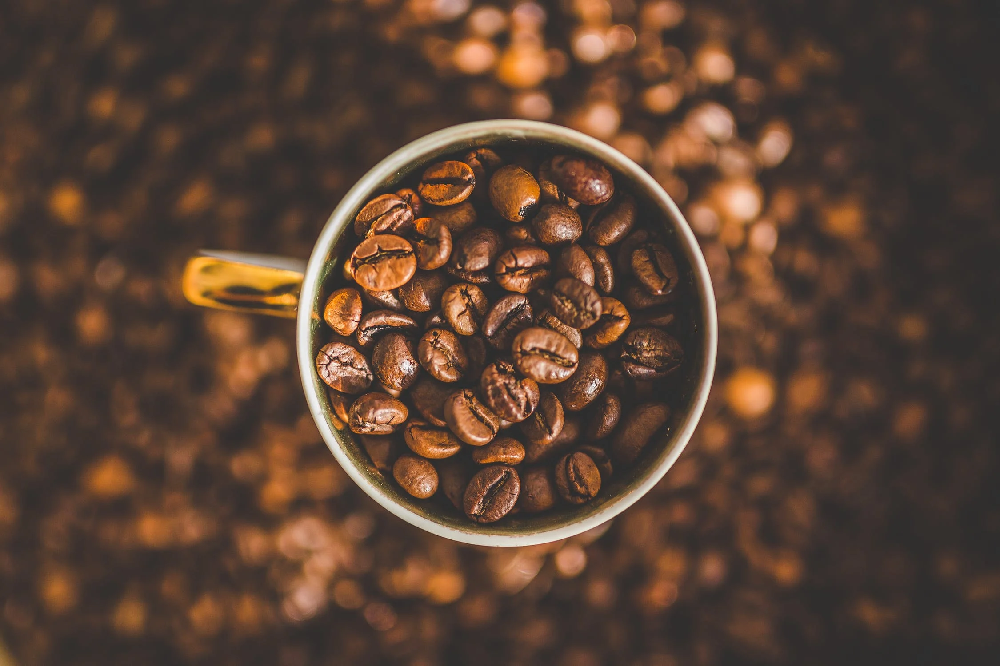
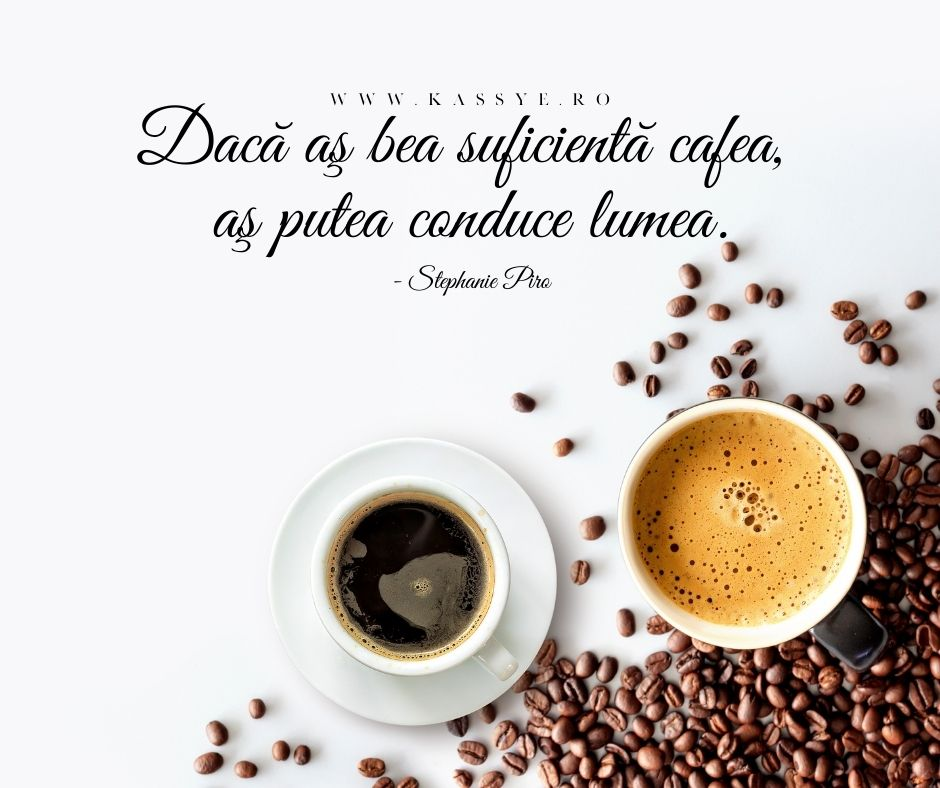

#Coffemood


Cafeaua este un moment de plăcere şi o aromă – Claudia Roden



Consumul de cafea: beneficii și contraindicații
Cafeaua reprezintă o sursă de cafeină, vitamine, minerale și antioxidanți. O ceașcă de cafea conține:
- 95 mg cafeină;
- vitamina B2 (riboflavină): 11% din necesarul zilnic;
- vitamina B5 (acid pantothenic): 6% din necesarul zilnic;
- vitamina B1 (tiamină): 2% din necesarul zilnic;
- folați: 1% din necesarul zilnic;
- mangan: 3% din necesarul zilnic;
- potasiu: 3% din necesarul zilnic;
- magneziu: 2% din necesarul zilnic.



Câtă cafeină conțin diverse băuturi?
| Tipul bauturii | Cantitate băutură (ml) | Conținut de cafeină (mg) |
|---|---|---|
| Cafea | 250 | 95 |
| Cafea instant | 250 | 60 |
| Cafea decofeinizată | 250 | 4 |
| Cafea espresso | 40 | 65 |
| Ceai negru | 250 | 47 |
Aromele de cafea
Aromele de cafea Cafeaua poartă, de obicei, numele țării sau regiunii de unde este recoltată, iar boabele de cafea pot fi identificate în funcție de aromele diferite, de aciditate sau de consistență și de intensitatea gustului. Aceste caracteristici ale gustului depind nu doar de zona în care au fost culese boabele de cafea, ci și de varietăți sau de modul în care au fost procesate.

Printre regiunile cele mai cunoscute sunt:
- Bourbon - este una dintre cele două varietăți inițiale ale cafelei arabica. A fost cultivată prima oară în insula Bourbon, actuala Reunion.
- Typica - este una dintre cele mai importante varietăți de cafea arabică din lume, cultivată extensiv în America Centrală
- Columbiana - este cafeaua arabică recoltată în Columbia;
- Java - este recoltată în insula indoneziană Java;
- Kona - este o varietate de cafea cultivată pe pantele munților din Hawaii;
- Catimor - este un hibrid între varietățile de cafea Caturra și Timor. A fost creată în Portugalia, se maturează repede, însă are nevoie de anumite condiții pentru fertilizare.
- Catuai - este o varietate de cafea recunoscută pentru rezistența sporită în fața intemperiilor;
- Mundonovo - această varietate de cafea este una dintre cele mai des întâlnite în Brazilia. Este ideală pentru climatul acestei țări și dă roade bogate.
- Caturra - este o variantă a soiului Bourbon, plantată prima oară în orașul brazilian Caturra. Este rezistentă la intemperii și la dăunători.